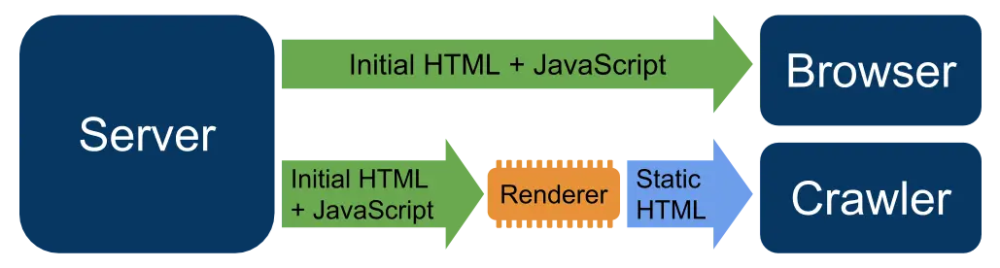

短答
动态渲染把 JavaScript 应用发给浏览器，把另一份 HTML 快照发给爬虫。
图显示的就是这种分裂。快照可能过时、更薄，或就是和人看到的不同。SEO 健康把这种差异当作应退役的缺陷，而不是应扩展的功能。首选修复是一份已经包含内容的 HTML 响应，两边都用它。
定义
伪装是令人不安的邻居：为了操纵而向爬虫展示人们看不到的东西。动态渲染被记录为针对空壳的权宜做法，不是向爬虫展示关键词页、向买家展示另一套报价的方法。如果快照和应用分叉，你就不再知道自己在维护哪一份文档。
渲染对爬虫意味着什么变化
退役单独的快照，向浏览器和爬虫提供同一份主要 HTML。
在权宜做法还在时，审计应该在样例 URL 上对比快照和渲染后的应用，并记录每一处缺失的规格或链接。省略价格或加入应用里没有的句子的快照，不是中性的性能技巧。模板改为提供一份文档之后再审计。

要检查什么
- 爬虫和浏览器是否收到相同的主要事实
- 在一条 URL 上对比快照与应用
- 点出缺失的规格或多出来的句子
- 提供单一 HTML 来源的计划
- 没有只存在于快照中的额外关键词文字
一个结构示例
备件站每晚为爬虫做 HTML 快照，向浏览器发送实时应用。规格中午在应用里改了，快照仍是昨天的值。健康发现是漂移。修复是用来源与应用相同的服务器 HTML，而不是更快的快照任务。
它不声称什么
动态渲染不保证排名或引用。
Mika Visibility 把它归到哪里
Mika Visibility 把渲染当作 SEO 健康问题：当模板依赖 JavaScript 时，重要 HTML 能否在有脚本和无脚本两种情况下被获取并比较。这种比较不是 GEO 审计，也不是市场覆盖计划。发现要附在样例 URL 上。模板改完之后的再审计，用来确认修复。
图显示两种输出，因此主题是漂移风险，而不是建议再加第三种。
常见问题
动态渲染向爬虫提供什么？
动态渲染把 JavaScript 应用发给浏览器，把另一份 HTML 快照发给爬虫。
为什么漂移是健康缺陷？
退役单独的快照，向浏览器和爬虫提供同一份主要 HTML。
动态渲染能保证排名吗？
动态渲染不保证排名或引用。
下一步
做一次结构化的 SEO + GEO 审计，查看健康发现、增长缺口和可以执行的蓝图。
更清晰的实体、答案、证据和上下文，会让页面更容易被理解与引用。任何回答产品中的结果都不作保证。